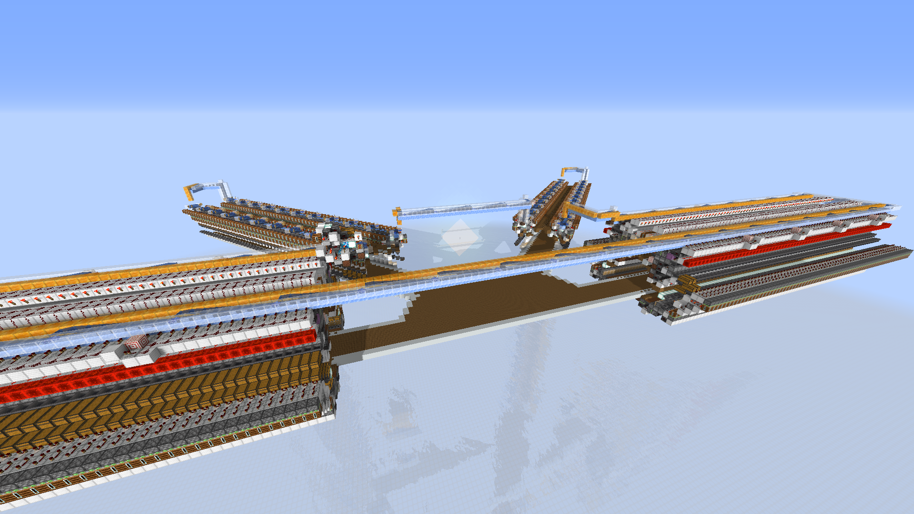
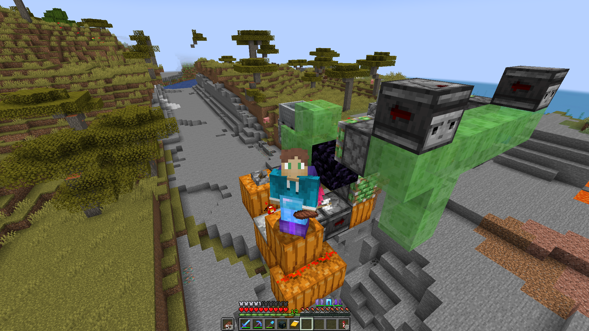

The Spire: Trying to sort every item in the game
Back
Our storage currently consists of about 20 double chests with some sort of category, but it isn’t really a good system as we both put stuff in chests where we don’t think it belongs. So we started designing our new automated storage system.
To have a storage system that is easy to use, accessible and able to store enough items for our needs we wanted to use three types of sorters:
- Bulk, which loads all the items into shulker boxes and displays the shulkerboxes at the interface.
- Single item sorters, which has about 2 double chests of storage for a single item type that isn’t loaded in shulker boxes.
- Multi item sorters, a sorter that gives each item their own category and can sort multiple items into a single chest.
After we set up these three categories, we went on searching how we could get this into a single storage system. We looked for designs for every individual system, for bulk storage we wanted to design our own slice and for multi item sorters we used a design by rapscallion and a few others, as it didn’t use slot preservation. For single item sorters, we went for something a bit different. The most used single item type sorter is the impulse sorter, but as rapscallion released a video on diagonal item sorting around the time we started designing, we ended up choosing for diagonal item sorting, which looks way cooler in a storage hall.

We still missed a bulk slice though. We started off with taking a the interface, the shulker box display, and designing that, so it would dispense a neww shulker box on a button press. After that, we added six double chests to store about 600.000 items and added a shulker box loader and item filter on top. Now that we had out bulk slice, we started putting the storage together We started with tiling the bulk slices, as these were

quite simple one wide tileable. We also needed to make a new center for the storage, because we were using a layout that no one really uses. We chose for a circle that was cut in half, which we ended up making an oval shape. The diagonal sorters were built next, and the multi item sorters as last. After this we took quite a long break from designing.
When we came back, we had a half circle that only had stuff on half of the circle. We still wanted to add a unstackable item sorter, but didn’t know what to do on the other side, as it seemed very unsymmetrical at that point. We ended up adding a huge potion brewer to the other side and a meeting room in the middle.
At the moment, we are preparing trenches for a 512 by 512 block perimeter to build this storage system in, which will also probably take a few hours on top of the 30+ hours we have put in to this project until now.
Statistics on The Spire
The Spire sorts almost every survival obtainable item in game, made up of bulk storage with ± 560,000 items storage per item, single item storage with ± 8,600 items storage or ± 5,100 items storage per item, multi-item storage with about 20,000 items storage per category and unstackable sorting, having ± 4,300 items storage per item. This is a total of ± 160 million items stored totally. Designing took about 30 hours, and perimeter bombing and survival building still needs to happen.
- Bulk: ± 560,000 items per sorter, ± 156,500,000 items total
- Single: ± 8,600 or ± 5,100 per sorter, ± 2,700,000 items total
- Multi: ± 20,000 items per category, ± 330,000 items total
- Unstackable: ± 4,300 items per sorter, ± 40,000 items total
- Total: ± 160 million items can be stored